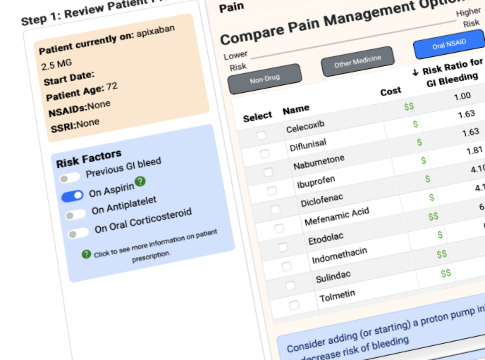
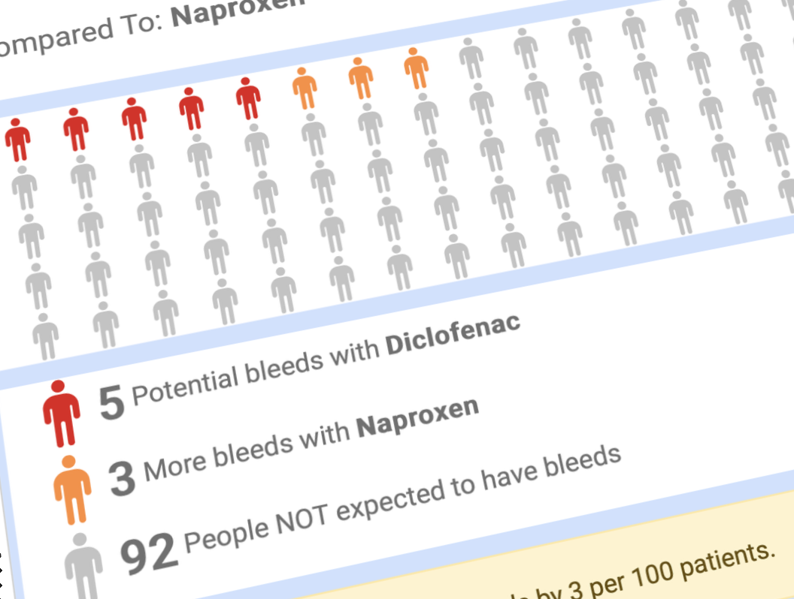

|
Dear Clinicians,
We are excited to introduce a new tool available in Epic to enhance patient safety for those on anticoagulants: DDInteract.
This innovative tool is designed to support shared decision-making between you and your patients when prescribing medications that may interact with anticoagulants, specifically NSAIDs and antidepressants. DDInteract provides a visual representation of patient-specific bleeding risks, allowing for a more informed conversation about treatment options.
What is DDInteract?
DDInteract is a clinical decision support tool that:
- Calculates and visualizes a patient's individualized risk of bleeding from drug-drug interactions.
- Integrates directly into the EHR workflow.
- Facilitates conversations with patients about the risks and benefits of their medication regimen.
See It In Action
To help you get started, we've created a brief training video. Please take a moment to watch it to see how DDInteract can be a valuable addition to your clinical practice:
|

Patient-Specific Risk View
|

Dynamic 'What If' Scenarios
|
We believe this tool will be a powerful asset in preventing adverse drug events and improving patient outcomes. We encourage you to start using it with your patients today.
For more detailed information, please see the attached slide deck.
Thank you for your dedication to patient safety.
Sincerely,
The DDInteract Project Team
|